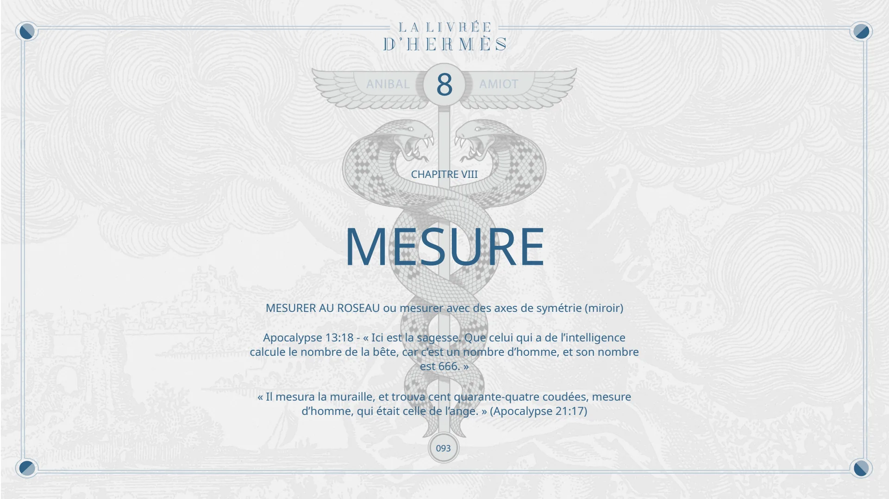

Chapitre VIII — Mesure
Pages 093 à 093 du livre · chapitre 8 sur 8
Chapitre VIII de La Livrée d'Hermès : Mesure. Mesurer au roseau, ou avec des axes de symétrie (miroir), et le nombre d'un homme (Apocalypse 13, 18).

8
CHAPITRE VIII
MESURE
ANIBAL
AMIOT
MESURER AU ROSEAU ou mesurer avec des axes de symétrie (miroir)
Apocalypse 13:18 - « Ici est la sagesse. Que celui qui a de l’intelligence calcule le nombre de la bête, car c’est un nombre d’homme, et son nombre est 666. »
« Il mesura la muraille, et trouva cent quarante-quatre coudées, mesure d’homme, qui était celle de l’ange. » (Apocalypse 21:17)
093
© Anibal Edelberto Amiot. CC BY-NC 4.0 — creativecommons.org/licenses/by-nc/4.0 · DOI 10.5281/zenodo.22722485